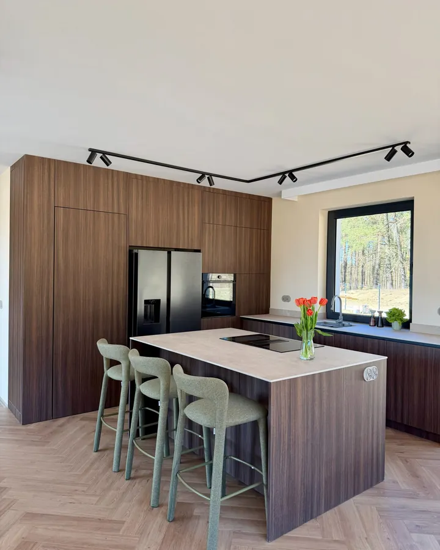

Kuchnie na wymiar
Zaczynamy od układu, a dopiero potem wybieramy fronty. Przy narożniku montujemy cargo, przy zlewie zmywarkę, a piekarnik często w słupku, na wysokości rąk.
- kuchnie w literę L i U, jednorzędowe, dwurzędowe, z wyspą
- zabudowa AGD pod konkretne modele sprzętu
- oświetlenie LED pod szafkami i w szufladach
- wysokość blatu dobrana do osoby, która gotuje